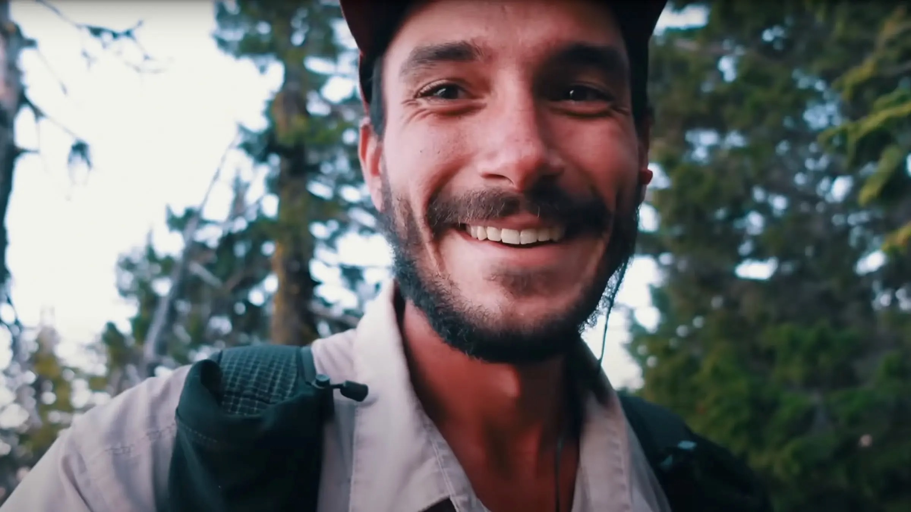

March 20, 2026
Jupiter is Missing
Jupiter is a guy not a planet. He is a pro long distance hiker and basically pioneered the sub 5 pound base weight. Jupiter is my hero, he has inspired me to do so many hikes and is such a nice guy.

But there is bad news.
Nobody has heard from him in 8 months. Last he said he was off to do a big bike packing trip and there has been no word from him ever since. I hope he is taking time off social media and relaxing in nature somewhere. And that everything is ok. I am sure he is ok, he is the world's most experienced backpacker.
-Alec